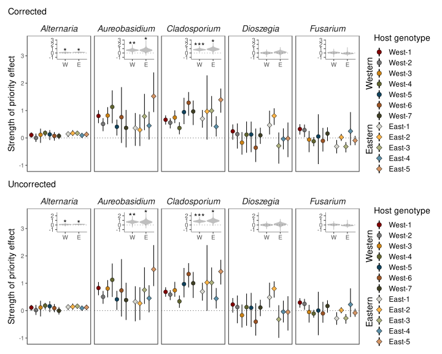
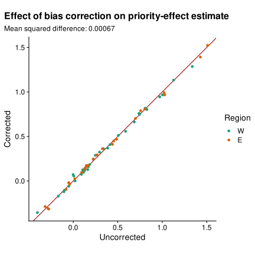
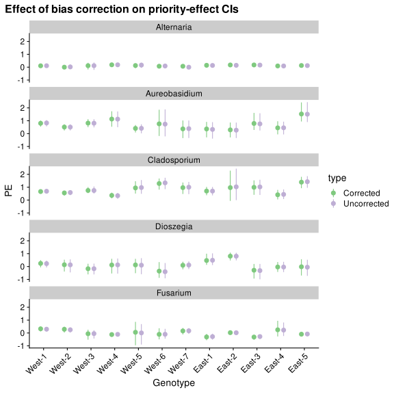
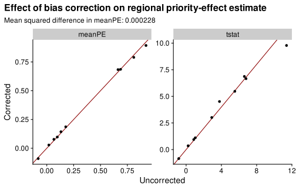

This Rmd determines whether bias correction has an impact on the analysis of priority effects in Leopold and Busby (2020).
https://github.com/dleopold/Populus_priorityEffects
This script follows the analysis of code/priorityEffects.R
Start by running the setup of libraries and loading the phyloseq object and bias estimate. The code is verbatim from the Leopold and Busby (2020) code except for the changes in directory necessary for the calls to source() and file reading.
# Analysis of the relative advantage of preemptive colonization.
library(tidyverse)
library(magrittr)
library(phyloseq)
library(foreach)
library(doMC)
library(ggthemes)
this_dir <- getwd()
setwd(here('notebook/_data/leopold2020host/dleopold-Populus_priorityEffects-8594f7c/'))
source("code/Rfunctions.R")
source("code/colors.R")
# register cores for parallel processing
registerDoMC(parallel::detectCores())
# load phyloseq data
(phy <- loadPhyloseq())
phyloseq-class experiment-level object
otu_table() OTU Table: [ 8 taxa and 247 samples ]
sample_data() Sample Data: [ 247 samples by 16 sample variables ]
tax_table() Taxonomy Table: [ 8 taxa by 7 taxonomic ranks ]
refseq() DNAStringSet: [ 8 reference sequences ]# identify focal taxa for plotting
focalTaxa <- unique(sample_data(phy)$Treatment)
# Extract OTU data, convert to proportions and long format
bias <- read.csv("output/tabs/bias.csv")
setwd(this_dir)
Next, we wrap the analyses of the original study within a function analyze_priority_effects() to facilitate running the same analyses on the calibrated and uncalibrated profiles. The code in the function is copied verbatim from the source in code/priorityEffects.R except that the call to unbias() in the very first line is skipped so that we can control whether correction is done. Click the toggle to expand the code chunk.
analyze_priority_effects <- function(phy, nboots = 10000) {
df <- phy %>%
transform_sample_counts(function(x){x/sum(x)}) %>%
otu_table %>% data.frame %>%
dplyr::select(all_of(focalTaxa)) %>%
bind_cols(sample_data(phy) %>% data.frame %>%
dplyr::select(Region,Genotype,Treatment)) %>%
pivot_longer(all_of(focalTaxa),names_to="Taxa",values_to="proportion") %>%
mutate(Focal=ifelse(Taxa==Treatment,T,F),
Region=ifelse(Region=="East","E","W") %>%
factor(levels=c("W","E")))
# Define a function to calculate the estimated priority effect strength for each species on each host genotype as the log-ratio of the proportional abundance when arriving early vs not arriving early
getPEs <- function(df) {
df %>% group_by(Focal,Region,Taxa,Genotype,Treatment) %>%
summarize_all(gm_mean) %>% ungroup %>%
group_by(Region,Genotype,Taxa) %>%
summarise(PE=log(mean(proportion[Focal])/mean(proportion[!Focal])))
}
meanPEs <- getPEs(df)
meanPEs$Genotype %<>% factor(.,levels=unique(.))
#####################
### Bootstrap CIs ###
#####################
# Get bootstrap confidence intervals on point estimates of priority effects for each species on each genotype
# nboots <- 10000
bootPEs <- foreach(i=1:nboots, .combine=bind_rows) %dopar% {
df %>% group_by(Region, Taxa, Genotype,Focal,Treatment) %>%
sample_frac(replace=T) %>%
getPEs() %>% mutate(bootID=i)
}
bootPEs$Genotype %<>% factor(.,levels=unique(bootPEs$Genotype))
# Get bias corrected and accelerated confidence intervals
bootPE.ci <- bootPEs %>%
group_by(Genotype,Taxa) %>%
summarize(LCI=coxed::bca(PE)[1],
UCI=coxed::bca(PE)[2]) %>% full_join(meanPEs)
###################
### Region test ###
###################
# First get the mean priority effect for each species on eastern and western genotypes
regionPEs <- meanPEs %>% group_by(Region,Taxa) %>%
summarize(meanPE=mean(PE),
tstat=t.test(PE,mu=0,alternative="greater") %>% .$statistic)
# Run bootstrapped t-test using 100 bootstraps at the region level for each of the previously generated genotype-level bootstraps
bootRegion <- foreach(i=1:100,.combine=bind_rows) %dopar% {
bootPEs %>%
group_by(Region,Taxa,bootID) %>%
sample_frac(replace=T) %>%
left_join(regionPEs,by=c("Region","Taxa")) %>%
mutate(center=PE-meanPE) %>%
summarize(mu.boot=mean(PE),
tstat.obs=mean(tstat),
tstat.boot=ifelse(var(center)==0,ifelse(mean(PE)>mean(meanPE),Inf,-Inf),
t.test(center,mu=0) %>% .$statistic))}
# calculate bootstrapped p-values (one-tailed test for significant positive priority effects)
bootRegionPvals <- bootRegion %>% drop_na %>%
mutate(test = tstat.boot+1>tstat.obs+1) %>%
summarize(pval=mean(as.numeric(test))) %>%
mutate(stars=gtools:::stars.pval(pval) %>% gsub(".","+",fixed = T,.))
regionSig <- bootRegion %>% summarize(mu.boot.max=max(mu.boot)) %>%
left_join(bootRegionPvals)
############
### PLOT ###
############
#' Define a function to plot the regional priority effects bootstrap results
get_inset <- function(df,inset.ymin,inset.ymax){
ggplot(df,
aes(x=Region,y=mu.boot)) +
geom_violin(scale="width",fill="grey75",color="grey75") +
geom_text(data=df %>% dplyr::select(Region,Taxa,stars,mu.boot.max) %>%
slice(1),
aes(label=stars,y=mu.boot.max),size=5)+
geom_hline(yintercept = 0,alpha=0.4,linetype="dotted")+
coord_cartesian(clip='off')+
ylim(c(inset.ymin,inset.ymax))+
theme_few()+
theme(strip.text = element_blank(),
axis.title = element_blank(),
panel.border = element_blank(),
axis.line = element_line(color="black",size=0.2))
}
# create inset plots as a list
insets <- bootRegion %>%
left_join(dplyr::select(regionSig,Region,Taxa,stars,mu.boot.max)) %>%
split(f = .$Taxa) %>%
purrr::map(~annotation_custom2(
grob = ggplotGrob(get_inset(.,min(bootRegion$mu.boot),max(bootRegion$mu.boot))),
data = data.frame(Taxa=unique(.$Taxa)),
ymin = 2.4, ymax=Inf, xmin=4, xmax=Inf)
)
# make full plot of bootstrapped priority effects results
plt <- ggplot(bootPE.ci,aes(x=Genotype,y=PE))+
geom_pointrange(aes(ymin=LCI,ymax=UCI,fill=Genotype,shape=Genotype),
size=0.5,stroke=0.35,fatten=5.5)+
scale_shape_manual("Host genotype", values=c(rep(21,7),rep(23,5)))+
scale_fill_manual("Host genotype",values=pal.genotype)+
geom_hline(yintercept = 0,alpha=0.6,linetype="dotted")+
scale_x_discrete(breaks = levels(bootPEs$Genotype),
limits = c(levels(bootPEs$Genotype)[1:7], "skip1",
levels(bootPEs$Genotype)[8:12]),
expand=expansion(0.075))+
ylab("Strength of priority effect")+
labs(tag="Eastern Western")+
coord_cartesian(clip='off')+
ylim(c(-1,3.5))+
facet_wrap(~Taxa,scales="free_x",nrow=1)+
guides(fill = guide_legend(override.aes = list(size=0.8)))+
theme_few()+
theme(axis.title.x = element_blank(),
axis.text.x = element_blank(),
axis.ticks.x = element_blank(),
strip.text = element_text(size=14,face="italic"),
axis.title.y = element_text(size=14),
legend.title = element_text(size=14),
legend.text = element_text(size=12),
legend.margin=margin(6,6,6,12),
plot.tag = element_text(angle=90,hjust=0),
plot.tag.position = c(0.848,0.115))+
insets
# ggsave("output/figs/Fig.3.pdf",width=24,height=10,units="cm")
return(
list(
meanPEs = meanPEs,
bootPEs = bootPEs,
bootPE.ci = bootPE.ci,
regionPEs = regionPEs,
bootRegion = bootRegion,
bootRegionPvals = bootRegionPvals,
plot = plt
)
)
}
Next, we run the analysis on the phyloseq objects with and without bias correction (calibration). Leopold and Busby (2020) use a custom function unbias() for bias correction, which also implements a zero-replacement procedure. In order to keep the calibrated and uncalibrated analyses comparable, we should apply the same zero-replacement procedure in both cases. We do this by applying unbias() with the supplied bias vector set to all 1s, which corresponds to no bias.
The only difference between the two phyloseq objects should be a perturbation by the bias vector, which we can check by using metacal::calibrate().
tmp <- metacal::perturb(
phy_list$Corrected,
bias %>% filter(Taxon != 'Melampsora') %>% select(Taxon, Bhat) %>% deframe,
norm = 'keep'
)
list(phy_list$Uncorrected, tmp) %>%
map(otu_table) %>%
map(transform_sample_counts, function(x) x / sum(x)) %>%
{all.equal(.[[1]], .[[2]])}
[1] TRUEThe sample totals are affected by unbias() such that they differ between the corrected and uncorrected objects,
G1.T1.R1.TP1 G1.T1.R2.TP1 G1.T1.R4.TP1
13838.643 13877.175 6882.873 G1.T1.R1.TP1 G1.T1.R2.TP1 G1.T1.R4.TP1
13838.643 13877.175 6882.873 G1.T1.R1.TP1 G1.T1.R2.TP1 G1.T1.R4.TP1
24815 24599 11290 But since the analysis function converts the counts to proportions in the first step, this difference can’t impact the results.
Finally, we run the analysis on both the corrected and uncorrected phyloseq objects. The call is wrapped in xfun::cache_rds() to cache the results; the hash is based on the inputs and the analysis function’s source code.
Next we compare the results of the analysis with and without bias correction.
res %>% names
[1] "Corrected" "Uncorrected"res[[1]] %>% names
[1] "meanPEs" "bootPEs" "bootPE.ci"
[4] "regionPEs" "bootRegion" "bootRegionPvals"
[7] "plot" First, let’s compare the main text figure with and without correction,
map2(map(res, 'plot'), names(res), ~.x + ggtitle(.y)) %>%
{.[[1]] / .[[2]]} &
theme(plot.title.position = 'plot')

The results are nearly indistinguishable; bias correction has no significant impact.
Next, let’s compare the point estimates of the priority effects,
x <- res %>%
map_dfr('meanPEs', .id = 'type') %>%
pivot_wider(names_from = type, values_from = PE)
mse <- x %>%
ungroup %>%
summarize(
mse = mean((Corrected - Uncorrected)^2)
) %>% .[[1]] %>% signif(3)
x %>%
ggplot(aes(Uncorrected, Corrected, color = Region)) +
coord_fixed() +
geom_abline(color = 'darkred') +
geom_point() +
labs(title = 'Effect of bias correction on priority-effect estimate',
subtitle = str_glue('Mean squared difference: {mse}')
) +
theme(plot.title.position = 'plot') +
scale_color_brewer(type = 'qual', palette = 2)

There is very little impact on the point estimates. Now, let’s compare the bootstrap confidence intervals with and without correction,
res %>%
map_dfr('bootPE.ci', .id = 'type') %>%
ggplot(aes(x = Genotype, y = PE, color = type, ymin = LCI, ymax =UCI)) +
facet_wrap(~Taxa, scales = "fixed", ncol = 1) +
geom_pointrange(position = position_dodge(width = 0.5)) +
scale_color_brewer(type = 'qual') +
theme(
plot.title.position = 'plot',
axis.text.x = element_text(angle = 45, hjust = 1)
) +
labs(title = 'Effect of bias correction on priority-effect CIs')

This fig clearly shows the equivalence of results with uncorrected and corrected taxonomic profiles.
Let’s do similar for the regional PEs.
x <- res %>%
map_dfr('regionPEs', .id = 'type') %>%
pivot_longer(c(meanPE, tstat)) %>%
pivot_wider(names_from = type)
mse <- x %>%
ungroup %>%
filter(name == 'meanPE') %>%
summarize(
mse = mean((Corrected - Uncorrected)^2)
) %>% .[[1]] %>% signif(3)
x %>%
ggplot(aes(Uncorrected, Corrected)) +
facet_wrap(~name, scales = 'free') +
# coord_fixed() + # doesn't work with free scales
geom_abline(color = 'darkred') +
geom_point() +
labs(title = 'Effect of bias correction on regional priority-effect estimate',
subtitle = str_glue('Mean squared difference in meanPE: {mse}')
) +
theme(plot.title.position = 'plot')

Again there is almost no effect, except that the largest t statistic is somewhat larger before bias correction.
sessioninfo::session_info()
─ Session info ────────────────────────────────────────────────────────────────────
setting value
version R version 4.1.2 (2021-11-01)
os Arch Linux
system x86_64, linux-gnu
ui X11
language (EN)
collate en_US.UTF-8
ctype en_US.UTF-8
tz America/New_York
date 2022-01-06
pandoc 2.14.1 @ /usr/bin/ (via rmarkdown)
─ Packages ────────────────────────────────────────────────────────────────────────
package * version date (UTC) lib source
ade4 1.7-18 2021-09-16 [1] CRAN (R 4.1.1)
ape 5.5 2021-04-25 [1] CRAN (R 4.1.0)
assertthat 0.2.1 2019-03-21 [1] CRAN (R 4.0.0)
backports 1.4.1 2021-12-13 [1] CRAN (R 4.1.2)
Biobase 2.52.0 2021-05-19 [1] Bioconductor
BiocGenerics 0.38.0 2021-05-19 [1] Bioconductor
biomformat 1.20.0 2021-05-19 [1] Bioconductor
Biostrings 2.60.1 2021-06-06 [1] Bioconductor
bitops 1.0-7 2021-04-24 [1] CRAN (R 4.1.0)
broom 0.7.10 2021-10-31 [1] CRAN (R 4.1.2)
bslib 0.3.1 2021-10-06 [1] CRAN (R 4.1.1)
cachem 1.0.6 2021-08-19 [1] CRAN (R 4.1.1)
cellranger 1.1.0 2016-07-27 [1] CRAN (R 4.0.0)
cli 3.1.0 2021-10-27 [1] CRAN (R 4.1.1)
cluster 2.1.2 2021-04-17 [2] CRAN (R 4.1.2)
codetools 0.2-18 2020-11-04 [2] CRAN (R 4.1.2)
colorspace 2.0-2 2021-08-11 [1] R-Forge (R 4.1.1)
cowplot * 1.1.1 2021-08-27 [1] Github (wilkelab/cowplot@555c9ae)
crayon 1.4.2 2021-10-29 [1] CRAN (R 4.1.1)
data.table 1.14.2 2021-09-27 [1] CRAN (R 4.1.1)
DBI 1.1.1 2021-01-15 [1] CRAN (R 4.0.4)
dbplyr 2.1.1 2021-04-06 [1] CRAN (R 4.0.5)
digest 0.6.29 2021-12-01 [1] CRAN (R 4.1.2)
distill 1.3 2021-10-13 [1] CRAN (R 4.1.1)
doMC * 1.3.7 2020-10-14 [1] CRAN (R 4.1.2)
downlit 0.4.0 2021-10-29 [1] CRAN (R 4.1.2)
dplyr * 1.0.7 2021-06-18 [1] CRAN (R 4.1.0)
ellipsis 0.3.2 2021-04-29 [1] CRAN (R 4.1.0)
evaluate 0.14 2019-05-28 [1] CRAN (R 4.0.0)
fansi 0.5.0 2021-05-25 [1] CRAN (R 4.1.0)
farver 2.1.0 2021-02-28 [1] CRAN (R 4.0.4)
fastmap 1.1.0 2021-01-25 [1] CRAN (R 4.0.4)
forcats * 0.5.1 2021-01-27 [1] CRAN (R 4.0.4)
foreach * 1.5.1 2020-10-15 [1] CRAN (R 4.0.3)
fs 1.5.2 2021-12-08 [1] CRAN (R 4.1.2)
generics 0.1.1 2021-10-25 [1] CRAN (R 4.1.1)
GenomeInfoDb 1.28.1 2021-07-01 [1] Bioconductor
GenomeInfoDbData 1.2.6 2021-05-31 [1] Bioconductor
ggplot2 * 3.3.5 2021-06-25 [1] CRAN (R 4.1.0)
ggthemes * 4.2.4 2021-01-20 [1] CRAN (R 4.0.4)
glue 1.5.1 2021-11-30 [1] CRAN (R 4.1.2)
gtable 0.3.0 2019-03-25 [1] CRAN (R 4.0.0)
haven 2.4.3 2021-08-04 [1] CRAN (R 4.1.1)
here * 1.0.1 2020-12-13 [1] CRAN (R 4.0.5)
highr 0.9 2021-04-16 [1] CRAN (R 4.1.0)
hms 1.1.1 2021-09-26 [1] CRAN (R 4.1.1)
htmltools 0.5.2 2021-08-25 [1] CRAN (R 4.1.1)
httr 1.4.2 2020-07-20 [1] CRAN (R 4.0.2)
igraph 1.2.9 2021-11-23 [1] CRAN (R 4.1.2)
IRanges 2.26.0 2021-05-19 [1] Bioconductor
iterators * 1.0.13 2020-10-15 [1] CRAN (R 4.0.3)
jquerylib 0.1.4 2021-04-26 [1] CRAN (R 4.1.0)
jsonlite 1.7.2 2020-12-09 [1] CRAN (R 4.0.3)
knitr 1.36 2021-09-29 [1] CRAN (R 4.1.1)
labeling 0.4.2 2020-10-20 [1] CRAN (R 4.0.3)
lattice 0.20-45 2021-09-22 [2] CRAN (R 4.1.2)
lifecycle 1.0.1 2021-09-24 [1] CRAN (R 4.1.1)
lubridate 1.8.0 2021-10-07 [1] CRAN (R 4.1.1)
magrittr * 2.0.1 2020-11-17 [1] CRAN (R 4.0.3)
MASS 7.3-54 2021-05-03 [2] CRAN (R 4.1.2)
Matrix 1.3-4 2021-06-01 [2] CRAN (R 4.1.2)
memoise 2.0.1 2021-11-26 [1] CRAN (R 4.1.2)
metacal 0.2.0.9008 2021-10-30 [1] Github (mikemc/metacal@c1f21db)
mgcv 1.8-38 2021-10-06 [2] CRAN (R 4.1.2)
modelr 0.1.8 2020-05-19 [1] CRAN (R 4.0.0)
multtest 2.48.0 2021-05-19 [1] Bioconductor
munsell 0.5.0 2018-06-12 [1] CRAN (R 4.0.0)
NADA 1.6-1.1 2020-03-22 [1] CRAN (R 4.0.1)
nlme 3.1-153 2021-09-07 [2] CRAN (R 4.1.2)
nvimcom * 0.9-102 2021-11-12 [1] local
patchwork * 1.1.1 2020-12-17 [1] CRAN (R 4.0.3)
permute 0.9-5 2019-03-12 [1] CRAN (R 4.0.0)
phyloseq * 1.36.0 2021-05-19 [1] Bioconductor
pillar 1.6.4 2021-10-18 [1] CRAN (R 4.1.1)
pkgconfig 2.0.3 2019-09-22 [1] CRAN (R 4.0.0)
plyr 1.8.6 2020-03-03 [1] CRAN (R 4.0.0)
purrr * 0.3.4 2020-04-17 [1] CRAN (R 4.0.0)
R6 2.5.1 2021-08-19 [1] CRAN (R 4.1.1)
RColorBrewer 1.1-2 2014-12-07 [1] CRAN (R 4.0.0)
Rcpp 1.0.7 2021-07-07 [1] CRAN (R 4.1.0)
RCurl 1.98-1.5 2021-09-17 [1] CRAN (R 4.1.1)
readr * 2.1.1 2021-11-30 [1] CRAN (R 4.1.2)
readxl 1.3.1 2019-03-13 [1] CRAN (R 4.0.0)
reprex 2.0.1 2021-08-05 [1] CRAN (R 4.1.1)
reshape2 1.4.4 2020-04-09 [1] CRAN (R 4.0.0)
rhdf5 2.36.0 2021-05-19 [1] Bioconductor
rhdf5filters 1.4.0 2021-05-19 [1] Bioconductor
Rhdf5lib 1.14.2 2021-07-06 [1] Bioconductor
rlang 0.4.12 2021-10-18 [1] CRAN (R 4.1.1)
rmarkdown * 2.11 2021-09-14 [1] CRAN (R 4.1.1)
rprojroot 2.0.2 2020-11-15 [1] CRAN (R 4.0.3)
rstudioapi 0.13 2020-11-12 [1] CRAN (R 4.0.3)
rvest 1.0.2 2021-10-16 [1] CRAN (R 4.1.1)
S4Vectors 0.30.0 2021-05-19 [1] Bioconductor
sass 0.4.0 2021-05-12 [1] CRAN (R 4.1.0)
scales 1.1.1 2020-05-11 [1] CRAN (R 4.0.0)
sessioninfo 1.2.2 2021-12-06 [1] CRAN (R 4.1.2)
stringi 1.7.6 2021-11-29 [1] CRAN (R 4.1.2)
stringr * 1.4.0 2019-02-10 [1] CRAN (R 4.0.0)
survival 3.2-13 2021-08-24 [2] CRAN (R 4.1.2)
tibble * 3.1.6 2021-11-07 [1] CRAN (R 4.1.2)
tidyr * 1.1.4 2021-09-27 [1] CRAN (R 4.1.1)
tidyselect 1.1.1 2021-04-30 [1] CRAN (R 4.1.0)
tidyverse * 1.3.1 2021-04-15 [1] CRAN (R 4.1.0)
truncnorm 1.0-8 2018-02-27 [1] CRAN (R 4.0.1)
tzdb 0.2.0 2021-10-27 [1] CRAN (R 4.1.2)
useful 1.2.6 2018-10-08 [1] CRAN (R 4.0.0)
utf8 1.2.2 2021-07-24 [1] CRAN (R 4.1.0)
vctrs 0.3.8 2021-04-29 [1] CRAN (R 4.1.0)
vegan 2.5-7 2020-11-28 [1] CRAN (R 4.0.3)
withr 2.4.3 2021-11-30 [1] CRAN (R 4.1.2)
xfun 0.28 2021-11-04 [1] CRAN (R 4.1.2)
xml2 1.3.3 2021-11-30 [1] CRAN (R 4.1.2)
XVector 0.32.0 2021-05-19 [1] Bioconductor
yaml 2.2.1 2020-02-01 [1] CRAN (R 4.0.0)
zCompositions 1.3.4 2020-03-04 [1] CRAN (R 4.0.1)
zlibbioc 1.38.0 2021-05-19 [1] Bioconductor
[1] /home/michael/.local/lib/R/library
[2] /usr/lib/R/library
───────────────────────────────────────────────────────────────────────────────────